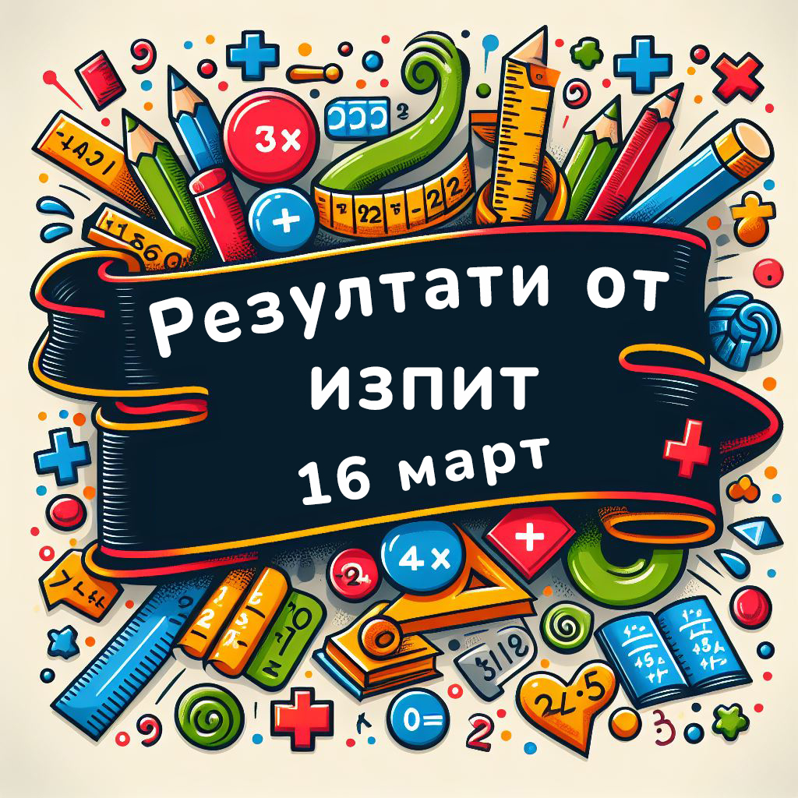

На 16 март 2024 г., секция В. Търново на СМБ проведе пробен изпит по математика в ПМГ „Васил Друмев“. Изпитът беше организиран за учениците, които им предстои да се явят на национално външно оценяване по математика след 7. клас с цел, те да тестват своите умения.
